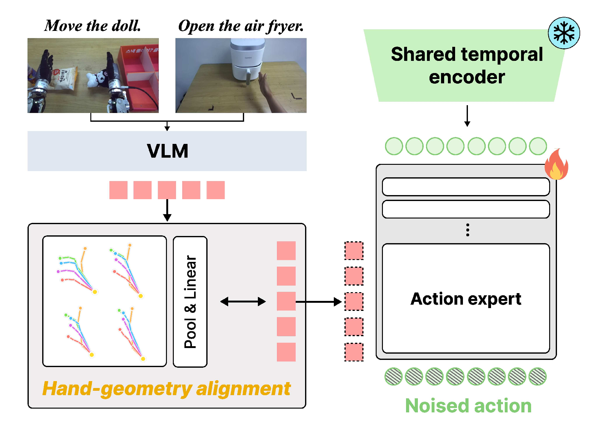
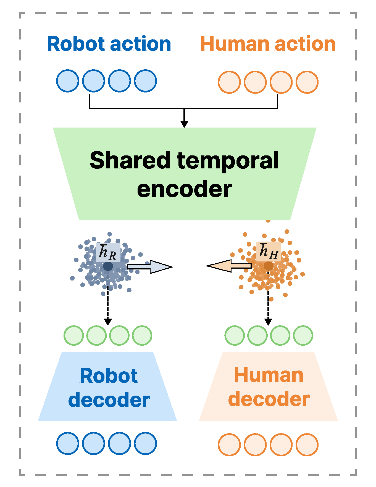

Human-to-Robot Transfer via Bridging
Representation and Action Space in VLAs
Video could not load. Download the human demonstration.
Video could not load. Download the robot rollout.
Video could not load. Download this recording.
Video could not load. Download this recording.
Independent recordings. RB-Y1 demos were recorded separately from the paper’s evaluation trials. Both policies use robot-only downstream fine-tuning; failure excerpts include operator clearing.
Demo details and recording conditions
OpenArm transfer
“Open the air fryer.”
Skill transfer · instruction-conditioned variant
Independent recordings. Native playback at recorded speed. Drag each timeline to explore the recording. Selected examples; aggregate evaluation is reported below.
RB-Y1 adaptation
Turn the shipping label upward, then deliver the parcel.
The carton stalls with Robot-only HT; an operator clears it at the end. H2RB delivers it label-up.
Both policies use robot-only downstream fine-tuning. H2RB adds human–robot HT with geometry alignment. Independent selected recordings; native playback at recorded speed.
H2RB in three points
- Transfer human-demonstrated tasks to robots using pretrained VLAs, without target-robot demonstrations or paired human-robot trajectories.
- Bridge cross-embodiment perception and action gaps through hand geometry-anchored alignment and a decoupled-decoder latent tokenizer.
- Scale with heterogeneous human-robot training to improve human-to-robot task transfer and robot-only downstream adaptation.
Abstract
Robot demonstrations are expensive to collect. Human demonstrations are far easier to capture—but a human hand and a robot hand do not look or move the same way. Putting their actions in the same format only solves part of the problem.
H2RB bridges both sides of that gap. It grounds a pretrained vision-language-action model’s representations in shared hand geometry, and learns a common action space with separate decoders for human and robot motion.
The result: a robot can learn target objects and interactions from human demonstrations, using prior robot experience to make those behaviors executable. No paired human–robot trajectories or target-task robot demonstrations are needed for the OpenArm transfer settings.
Method overview
H2RB connects human and robot experience at two interfaces: the features that condition the policy, and the actions the policy predicts.

Ground perception in geometry
A shared residual adapter learns wrist pose and fingertip geometry from each observation. Human and robot features become more compatible without paired demonstrations.

Share actions, preserve dynamics
A shared encoder learns compatible action latents. Separate decoders retain the motion structure of each source instead of forcing both through a single action mapping.
How does deployment work?
The policy takes robot observations, proprioceptive state and a language instruction. Its action expert generates latent actions, which the human-trained decoder maps into the shared, robot-compatible wrist–hand representation. Inverse normalization, coordinate mapping and inverse kinematics produce robot commands. The shared encoder and latent-action policy have learned from both sources; selecting the human decoder does not make the policy human-only.
Robot and evaluation setup
OpenArm evaluates human-to-robot object and skill transfer with Inspire dexterous hands, a head-mounted stereo camera and 20 Hz rollouts. RB-Y1 tests robot-only fine-tuning on parcel-handling tasks.
Human-to-robot transfer
On OpenArm with Inspire hands, H2RB transfers pick-and-place to new objects and learns to open and close an air fryer—interactions absent from the source robot demonstrations.
New objects, a familiar skill
Box, ball and towel. Target-object demonstrations come from humans.
H2RB improves average object-transfer score from 8.0 to 51.8.
OpenArm values measure execution progress on a 0–100 scale; they are not binary success percentages. Values are transcribed from the manuscript’s main tables.
Human
Video could not load. Download this training example.
Robot
Video could not load. Download this training example.
One representative demonstration per task. Human videos introduce the target tasks; robot demonstrations provide training on other tasks. Native playback at recorded speed.
View all baseline scores and evaluation details
Scroll horizontally to see all columns.
| Method | Object · all | Object · ID | Object · OOD | Open | Close | Skill · avg. |
|---|---|---|---|---|---|---|
| Human-only | 29.1 | 33.7 | 20.0 | 36.0 | 22.0 | 29.0 |
| In-domain-only | 12.0 | 14.0 | 8.0 | 0.0 | 0.0 | 0.0 |
| Base policy co-train | 8.0 | 9.0 | 6.0 | 0.0 | 0.0 | 0.0 |
| + HaWoR shared action | 10.7 | 10.0 | 12.0 | 0.0 | 0.0 | 0.0 |
| + Ego-Pi shared action | 27.2 | 30.2 | 21.3 | 0.0 | 0.0 | 0.0 |
| + H2RB | 51.8 | 55.0 | 45.3 | 50.7 | 74.7 | 62.7 |
Object transfer uses 20 in-distribution and 10 placement-shift rollouts per target object. Robot in-domain tasks are evaluated separately. Full task protocols and score weights are described in the manuscript appendix.
Scaling with heterogeneous experience
The same principle extends to heterogeneous human–robot training across multiple embodiments, followed by task-specific fine-tuning.
Scroll horizontally to see all columns.
| Training | Object transfer | Skill transfer |
|---|---|---|
| H2RB | 51.8 | 62.7 |
| + Heterogeneous training | 57.2 | 81.7 |
Separately, stronger instruction conditioning raises the skill-transfer score from 62.7 to 83.3. This is a distinct experiment from heterogeneous training; the two gains are not combined.
- EgoDex
- 10,000
- In-house human
- 2,410
- OpenArm human
- 583
- OpenArm · single hand
- 452
- OpenArm · bimanual
- 623
- ALLEX
- 480
Episode composition of the reported HT dataset. Hover or tap a domain for its sources.
Cross-embodiment adaptation
On RB-Y1, geometry-grounded heterogeneous training also benefits robot-only downstream adaptation.
Parcel-handling success reaches 78%, compared with 72% for human–robot heterogeneous training without geometry grounding and 64% for robot-only training.
Binary success over 50 trials. All variants use robot-only downstream fine-tuning, without the shared action tokenizer.
RB-Y1 parcel-handling rollouts
Demonstration runs, recorded separately from the paper’s quantitative evaluation.
Video could not load. Download this recording.
Video could not load. Download this recording.
Complete independent recordings, including operator loading and clearing. Success requires label-up orientation and conveyor delivery. These recordings illustrate behavior; the 78% result above comes from all 50 evaluation trials. Native playback at recorded speed.
Analysis and ablations
A shared action format alone does not guarantee shared knowledge. In the manuscript’s ablation, adding the latent tokenizer enables skill transfer; cross-domain regularization strengthens it further.
Scroll horizontally to see all columns.
| Action representation | Object | Skill | Latent gap |
|---|---|---|---|
| Without tokenizer | 34.7 | 0.0 | — |
| Tokenizer | 43.3 | 49.7 | 3.81 |
| + Cross-domain regularization | 51.8 | 62.7 | 1.53 |
The normalized latent gap contracts from 3.81 to 1.53. Separate decoders preserve source-specific action dynamics: the human-transferred policy reaches a mean wrist speed of 7.36 cm/s versus 2.52 cm/s for the robot-only policy, with task scores of 62.7 and 65.3 respectively.
Where do existing approaches fail?
Human-only policies can reproduce an interaction pattern yet miss a valid grasp. Robot-only policies have executable motion but lack the target behavior. Shared-action baselines can still predict invalid grasp poses or revert to a familiar pick-and-place motion instead of opening. These observed failures motivate aligning perception and action together.
Reconstruction, retargeting and scene-relative errors remain practical limits. A smaller latent gap or a successful selected clip alone is insufficient evidence of reliable transfer.
Bridging the representation gap
Compare hand geometry alignment with H2RB in the conditioning space, or inspect the effect of regularization on action latents.
Hand geometry alignment only
H2RB
Hand geometry alignment alone (left) and H2RB (right). Arrows show adapter-induced shifts for the same observation. These original manuscript projections retain their points, axes and colors.
PCA is a qualitative 2D view, read alongside the rollout results. Action-space panels use a separate PCA basis per tokenizer. Human I and II denote human object-transfer and skill-transfer data.
Paper and citation
Human-to-Robot Transfer via Bridging Representation and Action Space in VLAs
@misc{park2026humantorobottransferbridgingrepresentation,
title={Human-to-Robot Transfer via Bridging Representation and Action Space in VLAs},
author={Junhyeong Park and Wook Jung and Taeyoung Kim and Huiwon Jang and Jinwoo Shin},
year={2026},
eprint={2611.04391},
archivePrefix={arXiv},
primaryClass={cs.AI},
url={https://arxiv.org/abs/2611.04391},
}